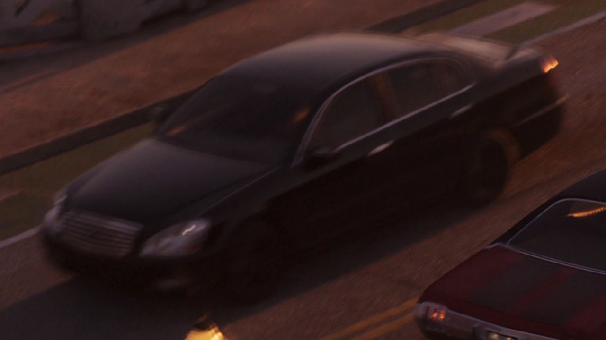
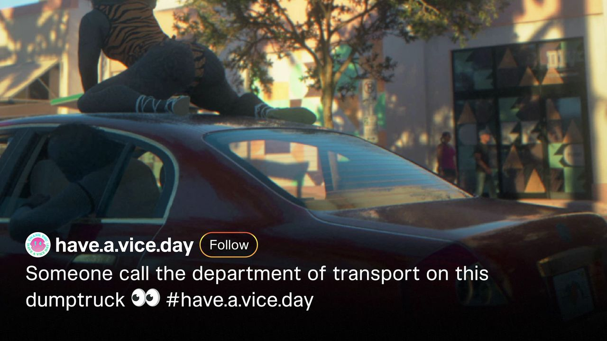
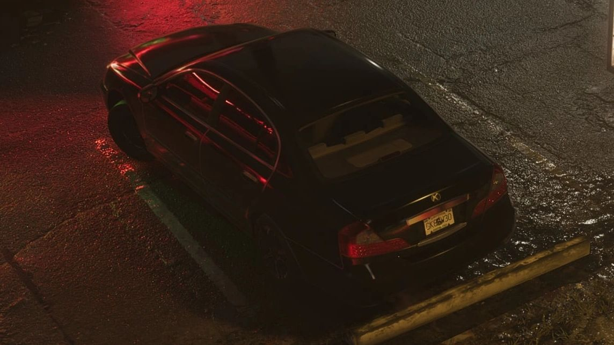

© Rockstar Games / Take-Two Interactive — image officielle de GTA VI (bande-annonce), via GTA Wiki.
Karin Intruder
EN BREF
- Constructeur : Karin
- Catégorie : Voiture
- Vu dans : fuites de septembre 2022 (non officiel): ; bande-annonce 1: 0:46, 1:03 and 1:07
- Fiabilité : 🟡 repéré d'abord dans les fuites de 2022, confirmé depuis
STATISTIQUES
Jauges de 0 à 100 : valeurs officielles affichées par Rockstar Games (Social Club) pour ce véhicule dans GTA V, relevées par le GTA Wiki. Les performances dans GTA 6 n'ont pas encore été publiées et peuvent différer.
Karin Intruder fait son retour dans GTA 6 (voiture) : déjà présent dans un épisode précédent de la série, il a été repéré dans le matériel officiel du jeu.
Fiabilité Première apparition dans les fuites de septembre 2022 ; confirmée depuis par la bande-annonce 1.
Dans GTA 6
L'Intruder est apparue brièvement dans deux clips des fuites de septembre 2022 (non officiel) : l'arrière garé au Cipher Mall de Rockridge, et un modèle blanc, peut-être de loin (LOD), sur une autoroute près du Starlet Motel. Elle revient plusieurs fois dans la bande-annonce 1 (0:46, 1:03, 1:07), avec des changements de design notables ; une rouge roule avec une fille qui twerke sur le toit.
Design et inspiration
Dans GTA IV, elle s'inspire de l'Infiniti Q45 de troisième génération (F50). Son design plus sportif et haut de gamme reprend un look autrefois porté par l'Emperor.
Dans GTA V et GTA Online
Berline de GTA IV, GTA V et GTA Online, sans être une voiture de performance : accélération correcte et vitesse de pointe plutôt élevée. Elle revient d'une version à compacte. Variante : Intruder VX.
Galerie


© Rockstar Games / Take-Two Interactive — images officielles de GTA VI (bandes-annonces, captures, site officiel), via GTA Wiki.